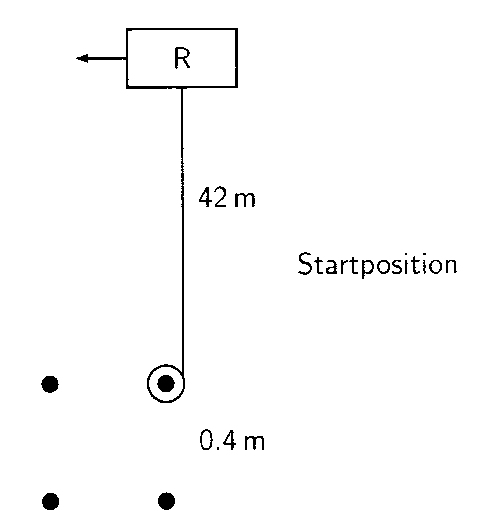
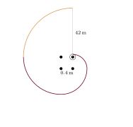

Aufgabe 7.7
4 Pflöcke, zum
Quadrat ausgesteckt ($a=0.4$ m) Ein wildgewordener Rasenmäher $R$,
der sich um die Pflöcke in einer spiralförmigen Bahn wickelt (weil
er an einem 42 m langen Seil hängt). Berechnen Sie einigermassen
geschickt, welche Weglänge der Rasenmäher nach 25 Runden
durchlaufen hat.

- Bei jeder Vierteldrehung verkürzt sich das Seil um die Quadratseite
- Die Bogenlängen bilden eine arithmetische Folge
- Nutzen Sie die Formel für die Summe einer arithmetischen Reihe
- Beachten Sie: Nach 25 Runden sind es 100 Viertelkreise

Was bei jeder Vierteldrehung geschieht. Das Seil ist am eingekreisten Pflock festgemacht. Der Mäher läuft einen Viertelkreis mit Radius $42$ m, dann legt sich das Seil an den nächsten Pflock, und der Radius ist $0.4$ m kürzer. So geht es weiter: $25$ Runden sind $100$ Viertelkreise mit den Radien \[42,\; 41.6,\; 41.2,\; \ldots,\; 42 - 99\cdot 0.4 = 2.4 \text{ m}.\]
Der geschickte Weg. Der mittlere Radius ist $\frac{42 + 2.4}{2} = 22.2$ m. Hundert Viertelkreise sind $25$ volle Kreise, also \[s = 25\cdot 2\pi\cdot 22.2\,\text{m} = 1110\,\pi\,\text{m} \approx 3487\,\text{m}.\] Der Rasenmäher legt also rund $3.5$ km zurück.
Im Video: Etappe 5 · Vom Umfang zum Flächeninhalt bei 5:27